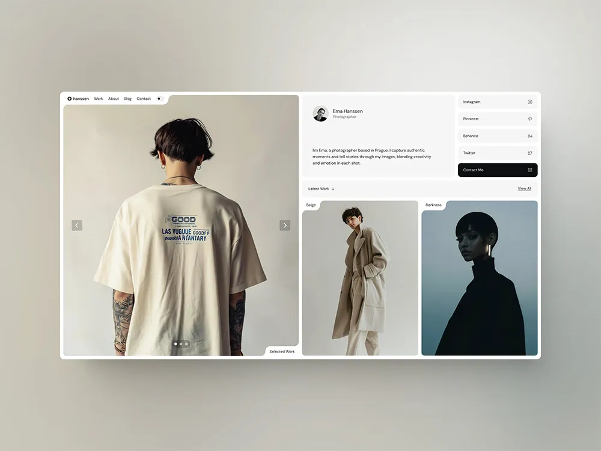
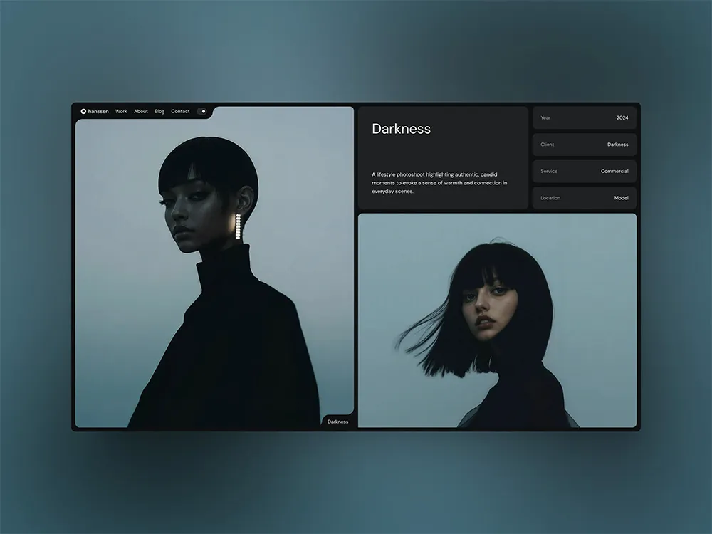
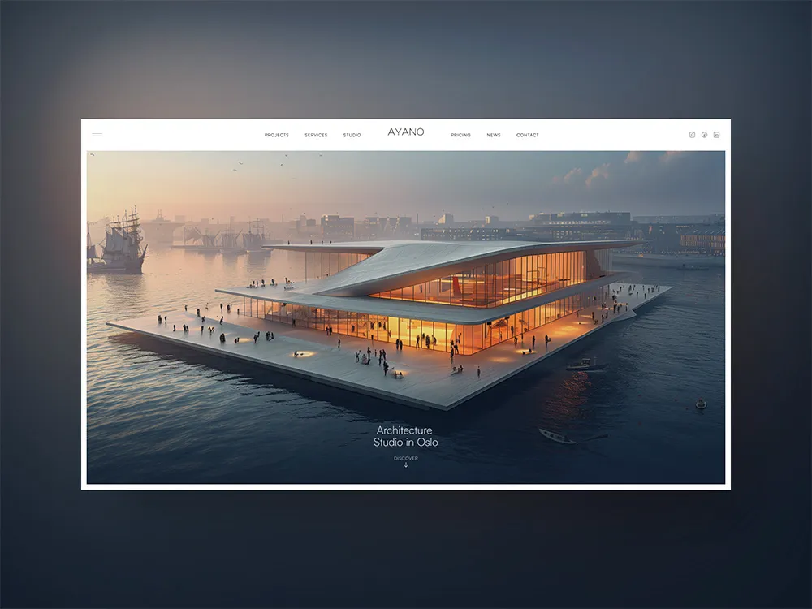
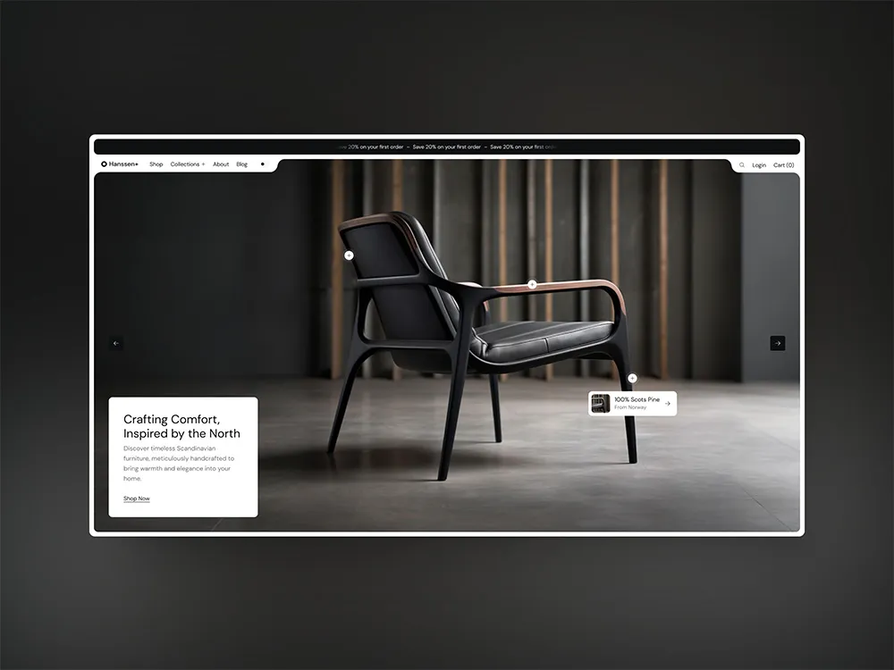
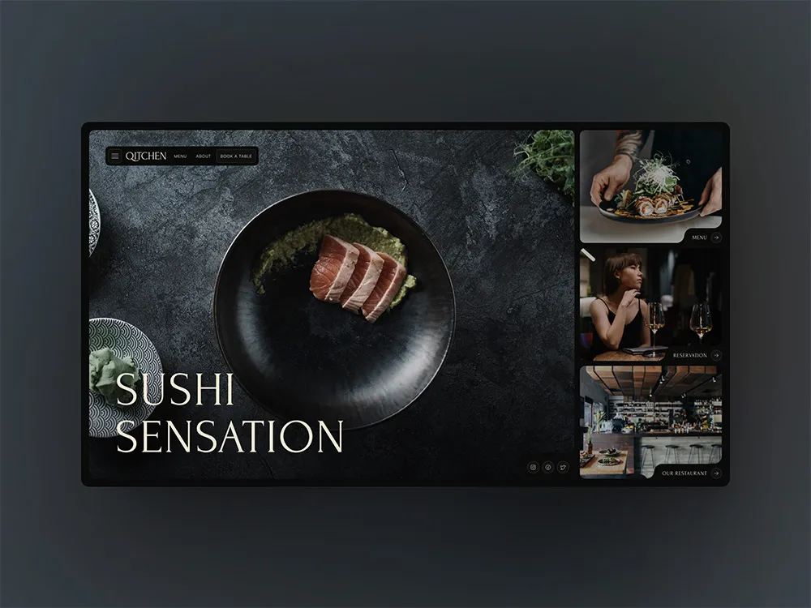

Srinatha Yoga School Platform
2025 – PresentEnterprise Next.js 14 & Supabase platform integrating course enrollment, international student portals, custom admin CMS, and live announcement bars.
Operations and client-facing professional with 5+ years of experience coordinating teams, cutting escalation delays by 40%, and building full-stack web platforms with Next.js, Supabase, and Vercel. Trusted by client representatives from Amazon Prime Video, MX Player, and Hotstar.

"Outstanding operational discipline, rapid problem-solving, and seamless technical delivery from Manpreeth."

Enterprise Next.js 14 & Supabase platform integrating course enrollment, international student portals, custom admin CMS, and live announcement bars.

Designed and developed a wellness-focused website for a Mysore-based studio, elevating local search presence, appointment booking, and mobile UX.

Modern agency web platform engineered for Mysore businesses, featuring automated lead capture pipelines, sub-second page loads, and AI workflow integrations.
Interactive digital menu and ordering platform for a popular Vijayanagar Mysore food truck, engineered for quick customer flow and mobile performance.
High-trust digital web platform for Meritus Diagnostics in Mysore Vijayanagar, designed for test catalog browsing and patient appointment booking.

Led development of animal welfare NGO platform in collaboration with VTVO, enabling independent donor communication, outreach, and adoption drives.
Luxury yoga retreat and 200hr/300hr teacher training booking platform in Goa, optimized for worldwide student enrollment and international traffic.
Karnataka eco-tourism and Western Ghats adventure discovery hub featuring altitude difficulty matrices, homestay reservations, and trail guides.
Deploying AI-assisted developer workflows, LLM agents, prompt architecture, and automating repetitive business operations.
Building blazing-fast web applications using Next.js, Supabase, REST APIs, and Vercel with clean, maintainable architecture.
Over 5 years managing 80+ daily client interactions, SLA adherence, Asana orchestration, and cutting delays by 40%.
Translating business concepts into intuitive user experiences, high-converting landing pages, and polished client presentations.
5+ years in client operations, team leadership, and digital delivery
Bachelor of Computer Applications (BCA) — SGPA: 8.05 / 10
Yoga Alliance Certified
Certified InstructorPMKVY / NSDC
NSQF Level 4Digiperform
Mastery CertifiedScience Olympiad Foundation
City Rank 7Anthropic • Claude Academy
Verified (12d6bf55)Participated in vaccination drives, animal rescue operations, and shelter maintenance initiatives across Mysore. Contributed to building the Dog Protection Trust website to support independent outreach.
Assisted with event logistics, community engagement, and public-facing coordination throughout the municipal festival.
"Manpreeth delivered exceptional dedication on our digital platform. His blend of prompt client communication, process rigor, and technical delivery made all the difference."
"Working with Manu is seamless. He takes complete ownership of deliverables, cuts through operational bottlenecks, and builds web experiences that our users genuinely love."
"Outstanding operational discipline and technical aptitude. Managed high-stakes campaigns with zero dropped balls across major streaming partners."
I am actively seeking roles at the intersection of Operations, Client Solutions, and AI-Assisted Web Development. These include Operations Manager, Technical Client Solutions Associate, Full-Stack / Frontend Web Developer (Next.js & Supabase), or AI Implementation Specialist. Open to remote, hybrid, or on-site opportunities worldwide.
With 5+ years handling 80+ daily customer interactions and leading cross-functional teams, I approach software with deep empathy for business realities, SLA deadlines, user needs, and operational bottlenecks. I don't just write code—I ensure software solves tangible business problems, cuts miscommunication, and scales seamlessly.
My core engineering toolkit centers around Next.js, React, Supabase, Vercel, modern vanilla CSS/HTML, Node.js, and autonomous AI-assisted developer workflows (Claude, LLMs, prompt architecture). I build responsive, accessible, and sub-500ms loading web platforms.
During my time as Campaign Associate at WLDD, I acted as the liaison between internal creative teams and client-side representatives from leading OTT entertainment brands including Amazon Prime Video, MX Player, and Disney+ Hotstar.
Yes! You can click the "Resume & CV" button in the hero section or the "Print ATS Resume" button in the Experience section to view, print, or save an ATS-optimized copy of my resume.
+91 87221 63256 | manpreeth007@gmail.com | Mysore, Karnataka | github.com/Manu-Socialeo
Operations and client-facing professional with over five years of experience coordinating teams, managing client relationships, and driving process improvements across fast-paced environments. Experienced in deploying AI-assisted workflows, building web applications, and working with modern development tools including Next.js, Supabase, and Vercel. Worked directly with client representatives from major OTT brands including Amazon Prime Video, MX Player, and Hotstar. Passionate about building intelligent, real-world software solutions and eager to contribute to an engineering team working at the intersection of AI and product development.
AI & Development: Next.js, Supabase, Vercel, HTML & CSS, Web Application Development, AI-Assisted Workflows, LLMs
Tools & Platforms: LeadSquared, Asana, Google Sheets, Google Workspace, Canva, Microsoft Office
Operations & Client Relations: Customer Service, Escalation Management, SLA Adherence, Process Improvement, Stakeholder Management
Languages: English (Fluent) | Kannada (Native) | Hindi (Conversational)